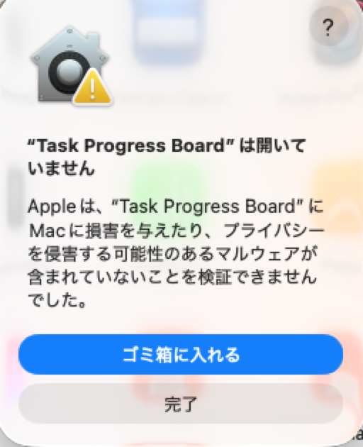
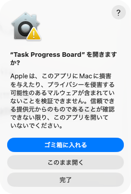

3階層をドラッグ整理
親・子・孫タスクを階層ごとに並べ替え。カードが手についてくる自然な操作感です。
親タスクから孫タスクまで、進捗をひとつの画面で整理。光沢感のある落ち着いたデザインで、毎日の作業に集中できます。
複雑な設定を覚えなくても、タスクを追加したその日から使い始められます。
親・子・孫タスクを階層ごとに並べ替え。カードが手についてくる自然な操作感です。
4つのテーマ、進捗ゲージの色、3段階の文字サイズを設定できます。
操作画面はいつでも切り替え可能。入力したタスク内容はそのまま保持されます。
Macはメニューの「このMacについて」でチップを確認できます。Windows 10／11の一般的な64bit PCはWindows版を選んでください。
「Apple M1」「M2」「M3」「M4」などと表示されるMacはこちらです。
ダウンロード ↓ Intel Mac「Intel Core i5」「Intel Core i7」などと表示されるMacはこちらです。
ダウンロード ↓ Windows x64Windows 10／11を搭載した一般的なIntel・AMD製64bit PCはこちらです。
ダウンロード ↓

実際のスクリーンショットを使用しています。ウインドウ外の背景のみを除き、画面内の文字やボタンは加工していません。macOSのバージョンによって表示が異なる場合があります。
公式アプリは個人・非商用目的で利用できます。ソースコードの利用・複製・改変・再配布・商用利用と、アプリ本体の再配布には事前の書面許可が必要です。